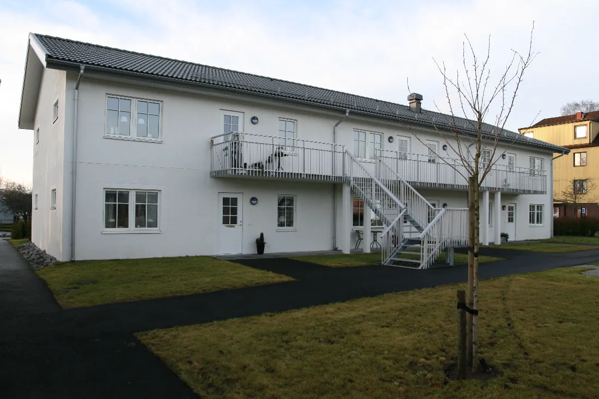
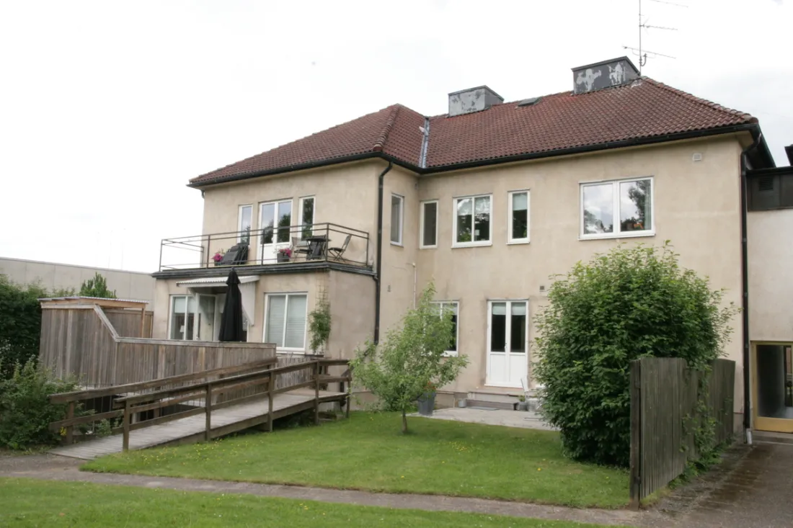
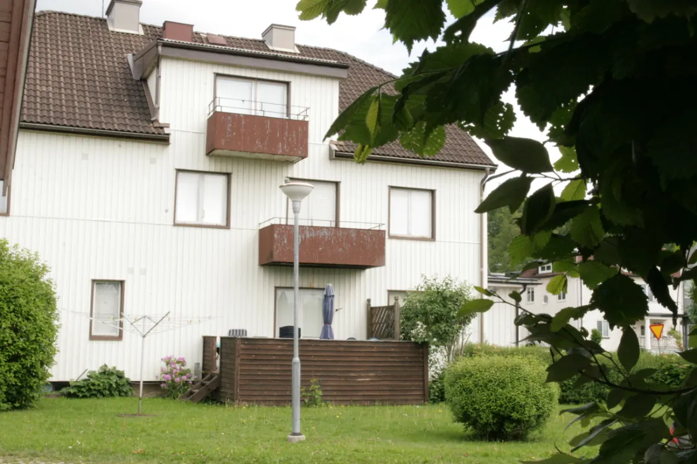
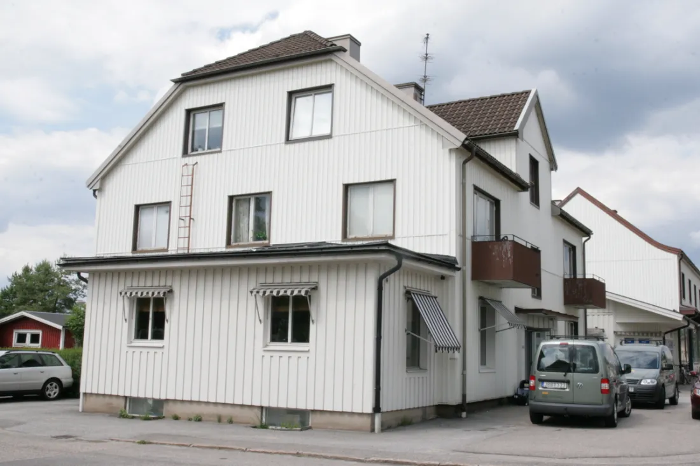

TranemoHammargatan 2 G–L
Ljusa rum, öppen planlösning och genomtänkta detaljer.
2–3 rum & kök64–82 m²

KETTIL FASTIGHETER · LIMMARED & TRANEMO
Från den första egna nyckeln till nästa kapitel i livet. Hitta din plats hos en lokal hyresvärd med ett personligt engagemang.
NÄRA HUSEN. NÄRA MÄNNISKORNA.
Vi tror på värdet i att finnas nära. Både platsen och människorna som bor där.
Kettil är ett familjeföretag med rötter i Limmared. Sedan starten 1989 har verksamheten vuxit med bostäder, fastigheter och kunskap inom byggande.
Lär känna KettilPLATS FÖR DIN VARDAG

TranemoLjusa rum, öppen planlösning och genomtänkta detaljer.

TranemoGamla läkarvillan, med en ny plats i vardagen.

LimmaredCharmiga lägenheter i en fastighet från tidigt 1900-tal.
Ett urval ur vårt bestånd. Kontakta oss för aktuell tillgänglighet och hyresinformation.

FÖR DIG SOM REDAN BOR HÄR
Behöver något lagas, har du en fråga eller vill du komma i kontakt med oss? Här hittar du rätt väg.
VÄGEN TILL ETT NYTT HEM
Utforska fastigheterna och fundera på vilken ort och typ av bostad som passar dig.
Kontakta oss med dina önskemål. Vi använder ett intresseregister, ingen bostadskö.
Vi pratar om aktuella möjligheter och hur du går vidare när en bostad passar.
NÄSTA STEG BÖRJAR MED ETT SAMTAL